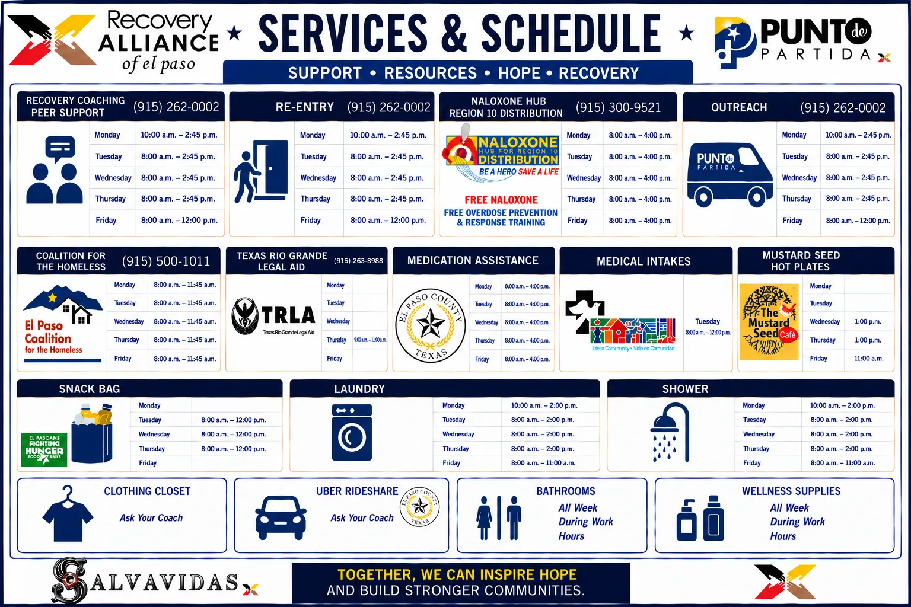

Punto de Partida
Services & weekly schedule
Our low-barrier drop-in center at 800 Montana Ave, El Paso.

Open the flyer full size (opens in a new tab)Tap the flyer to see it full size. Hours can change on holidays. Call (915) 262-0002 before you come.